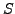
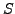
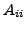

Numerical simulations in fractured media are an essential tool for studying hydraulic properties. Discrete Fracture Networks are composed of many multiscale plane fractures intersecting each other, leading to complex geometries. We assume that the rock surrounding the fractures is impervious and aim at simulating the flow in the fractures. Governing equations are Darcy's law and mass continuity, with continuity conditions at the intersections. Mesh generation is rather difficult in this context, because of the geometry, and requires a specific method [2]. We apply a Mixed Hybrid Finite element method and get a large sparse symmetric positive definite (spd) linear system to solve. Direct methods are efficient but become time- and memory- consuming for large systems. Algebraic multigrid method combined with Preconditioned Conjugate Gradient (PCG) converges in few iterations but is also time-consuming. The linear system has a specific structure since the problem is elliptic, but the geometry is neither 2D nor 3D. Domain decomposition methods are attractive because there is a natural geometrical decomposition. In this paper, we explore a preconditioned Schur complement approach.
A first step is to define a partition of the domain. A subdomain is here
a set of fractures, and the interface is the set of intersections with
fractures of other subdomains. With  subdomains, the matrix
subdomains, the matrix  has a
block-structure with non singular diagonal blocks
and nonzero blocks
. We define the local Schur
complement matrix
, the Schur matrix
and the associated
right-hand side
has a
block-structure with non singular diagonal blocks
and nonzero blocks
. We define the local Schur
complement matrix
, the Schur matrix
and the associated
right-hand side  . Since the matrix  is spd, we apply PCG to solve
the linear system .
. Since the matrix  is spd, we apply PCG to solve
the linear system .
We use the classical Neumann-Neumann (NN) preconditioner [1,6]. Since the partition generates floating subdomains, some local Schur complements are rank-deficient. In order to ensure a kernel of dimension 1, we build a partition such that a subdomain is composed of connected fractures. Then we apply an artificial Dirichlet boundary condition at one edge of the interface to get a non singular matrix . The NN preconditioner is then defined by . To gain in efficiency, we use the Cholesky factorization of  to complete the Cholesky factorization of , by adapting algorithms aiming at reducing fill-in.
We run numerical experiments with two fracture networks, containing
respectively 32 and 128 fractures. These networks are randomly generated,
with some large fractures, by using software MP-FRAC-D3 [2];
the domain is partitioned into connected subdomains using the software
SCOTCH [4]. The Schur method is implemented in Matlab.
In Tables  and
and  , we give convergence results
for CG and PCG(NN) applied to the Schur system. Clearly, NN
preconditioner reduces drastically the number of iterations Niter for a
small number of subdomains Ndom but is not efficient with many
subdomains, as expected.
, we give convergence results
for CG and PCG(NN) applied to the Schur system. Clearly, NN
preconditioner reduces drastically the number of iterations Niter for a
small number of subdomains Ndom but is not efficient with many
subdomains, as expected.
We use coarse-grid and deflation preconditioners to overcome this difficulty [5,3]. However, currently, these preconditioners are not efficient. This might be due to the specific structure of the linear system. We further investigate this approach.
|
|